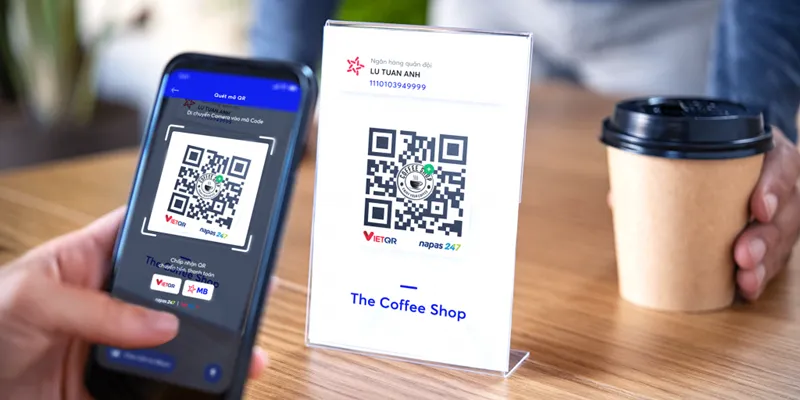

随着东南亚数字经济持续增长，越南正在成为众多跨境企业布局的重要市场。从电子商务、线上娱乐、旅游服务，到SaaS软件、跨境贸易等行业，越来越多企业开始关注越南本地支付体系，希望通过更加便捷、安全、高效的支付方式提升用户体验。 近年来，越南消费者的支付习惯正在发生明显变化，现金支付比例逐渐下降，二维码支付、银行卡转账以及电子钱包支付快速普及。根据越南支付行业公开数据，非现金支付交易持续增长，其中二维码支付成为增长速度较快的支付方式之一。 对于计划进入越南市场的企业来说，如何快速接入当地支付体系，实现稳定的越南本地收款，已经成为业务发展的关键环节。
一、越南市场为什么需要本地化支付方案？
很多企业进入越南市场初期，会发现当地支付环境与其他国家存在明显差异。越南拥有大量本地银行体系，同时消费者习惯使用银行卡转账、二维码支付以及电子钱包完成交易。如果企业直接使用海外支付方式，不仅可能面临支付成功率不足的问题，也可能因为缺少本地支付入口影响用户体验。例如，一个越南消费者在购买商品时，如果支付页面只支持国际信用卡，而无法提供本地银行转账或二维码支付，用户可能因为操作复杂而放弃订单。
因此，对于跨境企业而言，本地化支付能力已经不是额外服务，而是进入越南市场的重要基础设施。
二、越南本地收款通道解决企业支付难题
专业的越南第三方支付服务商，可以帮助企业连接当地支付资源，通过统一接口实现多渠道收款。相比企业自行对接多家银行和支付机构，第三方支付平台通常能够提供更加标准化的解决方案，包括
1. 多银行支付通道整合。企业无需分别开发不同银行接口，通过一个统一支付接口即可连接多个本地银行渠道。这样不仅降低技术开发成本，也方便后期业务扩展。
2. VietQR二维码收款。二维码支付已经成为越南消费者常用方式之一。通过聚合二维码收款模式，企业可以向用户提供更加符合当地习惯的支付体验。用户扫码后，可以直接通过支持的银行应用完成付款，提高交易便利性。
3. 实时订单状态通知。对于电商、游戏平台、数字服务企业来说，支付结果反馈速度非常重要。稳定的支付系统通常需要支持：自动回调通知、支付状态查询、异常订单监控、风险提醒，帮助企业及时确认订单，提高业务处理效率。
三、API接入成为企业数字化支付的重要方向
随着企业业务规模扩大，人工处理订单已经无法满足需求。越来越多企业选择通过API接口连接支付系统，实现自动化交易流程。一个成熟的越南支付API系统通常包括： 创建订单接口：企业系统提交订单信息后，支付平台自动生成支付链接或者二维码。 支付结果通知接口：用户完成付款后，系统自动通知企业服务器，实现订单自动更新。 查询订单接口：企业可以随时查询交易状态，方便财务管理和客户服务。 退款及资金管理接口：帮助企业处理退款、资金统计以及交易分析。 API接入最大的优势，是能够让支付流程融入企业自身业务系统，实现真正自动化运营。
四、选择越南第三方支付服务商需要关注哪些因素？
市场上的支付服务方案越来越多，但企业选择合作伙伴时，需要重点关注几个方面。第一，支付通道稳定性。支付成功率直接影响企业收入。稳定的支付渠道需要具备多通道能力，当某一渠道出现波动时，可以快速切换备用线路。第二，技术支持能力。支付系统不是一次性开发，而是长期运营服务。企业需要关注：API文档是否完善、技术团队响应速度、系统稳定性、数据安全能力。第三，资金管理能力。对于长期运营企业来说，资金流管理非常重要。优秀的支付解决方案不仅提供收款功能，还应该帮助企业实现：交易记录管理、财务数据统计、资金流水查询、自动化对账。
五、未来越南支付市场的发展趋势
未来几年，越南数字支付仍将保持增长趋势。随着二维码支付、开放银行API以及跨境支付连接不断发展，企业对本地化支付基础设施的需求会进一步增加。对于希望进入越南市场的企业来说，选择合适的支付合作伙伴，可以帮助企业降低进入门槛，提高交易效率，并快速适应当地消费者支付习惯。越南本地收款已经不仅仅是一个支付功能，而是企业连接越南市场的重要商业基础设施。通过稳定的越南支付通道、完善的API接入能力、高效的收银台系统以及专业的资金管理方案，企业能够更加快速、安全地开展越南业务，实现长期增长。